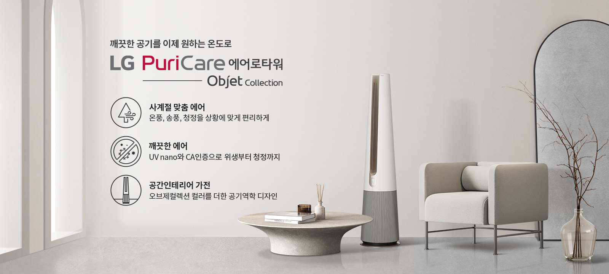

이제 청정한 공기를
계절-상황-공간에 맞춰
원하는 온도로
다양한 순간, 각자의 취향에 맞춰
깨끗한 공기를 원하는 온도로
마음 놓고 누릴 수 있도록
공기청정팬 LG 퓨리케어 에어로타워가
더 편안한 사계절 청정 라이프를 선사합니다.
깨끗한 공기를 원하는 온도로
마음 놓고 누릴 수 있도록
공기청정팬 LG 퓨리케어 에어로타워가
더 편안한 사계절 청정 라이프를 선사합니다.
- * 공기청정팬이란?
사용자의 라이프스타일 또는 취향에 맞춰
청정된 공기의 온도를 따뜻하거나 시원하게 바꿔가며
사용할 수 있는 제품입니다.


깨끗한 공기를 이제 원하는 온도로 LG PuriCare 에어로타워 - 사계절 맞춤 에어 : 온풍, 송풍, 청정을 상황에 맞게 편리하게 - 깨끗한 에어로 : UV nano와 CA인증으로 위생부터 청정까지 - 공간인테리어 가전 : 오브제컬렉션 컬러를 담은 공기역학 디자인
일상에 맞춰 원하는 온도로
사계절 맞춤 에어
공간과 생활에 맞춰
청정은 물론 온풍과 송풍까지
깨끗한 공기를 이제 원하는 온도로 만나보세요.
청정은 물론 온풍과 송풍까지
깨끗한 공기를 이제 원하는 온도로 만나보세요.
기분 좋은 청정 바람을
사계절 라이프스타일에
맞춰 사용해 보세요!
사계절 맞춤 에어 - 집중청정 온풍
쌀쌀한 환절기에도
마음 놓이는 따뜻함
목표 온도보다 실내 온도가 낮아지면
온풍으로 공간에 온기를 더합니다.
1~10단계 풍량 조절로 16~30℃까지 목표 온도를
설정하여 9분 만에 실내 온도를 높일 수 있죠.
온풍으로 공간에 온기를 더합니다.
1~10단계 풍량 조절로 16~30℃까지 목표 온도를
설정하여 9분 만에 실내 온도를 높일 수 있죠.
- [실내 온도 상승]
-
- 시험모델 : FS061PWHA
- 시험일자 : 21.09.27~11.16
- 시험방법 :
- 측정 방법 : Thermocouple(열전대) 활용하여 온도 측정(최대 36채널)
- 측정 영역 : 3.7m(W) * 5.2m(D) * 2.4m(H), 약 6평
- 측정 시간 : 제품 On 기준으로 60분 측정
- 시험장소 : LG스마트파크2 CMR챔버
- 시험조건 : 20℃(난방 표준 조건)
- 시험결과 : 실내온도 5도 상승하는데 걸리는 시간(약풍: 14분, 강풍 9분)
- 인증기관 : LG전자 자체 평가
사계절 맞춤 에어 - 집중청정 송풍
공간을 빠르게 채우는
기분 좋은 시원함
일상 모든 순간에 쾌적함을 채워보세요.
10단계 바람세기 조절이 가능한 송풍 기능은
1.5m 넓은 폭으로 바람을 멀리까지 보내,
280초 만에 체온 1℃ 를 내려줍니다.
10단계 바람세기 조절이 가능한 송풍 기능은
1.5m 넓은 폭으로 바람을 멀리까지 보내,
280초 만에 체온 1℃ 를 내려줍니다.
- [쾌적한 바람]
-
- 시험모델 : FS061PWHA
- 시험기관 : LG전자 자체 평가
- 시험일자 : '21.04.13
- 시험방법 :
- KANOMAX 사 다지점 기류계측기로 유속 측정
- 측정 위치 : 제품으로부터 2.0m 거리
- 측정 영역 : 좌우 폭 0.3m, 높이 1.11~1.41m
- 측정 간격 : 0.15m
- 측정 주기 : 1초 간격으로 3분간 측정
- 시험장소 : LG공기과학연구소 실환경 실험실
- 시험조건 : 28±2℃, 45±15%
- 시험결과 : 집중청정(터보풍) 운전 시, 난류강도 최고 44% 확인 (일반적으로 실내에서 난류 강도는 10-40% 쾌적함을 느끼는 난류강도는 35~45% - 근거논문 : Parkinson, T., & de Dear, R. (2017). Thermal pleasure in built environments: spatial alliesthesia from air movement. Building Research & Information, 45(3), 320-335)
- 실험실 측정 기준으로 실 사용환경에서는 달라질 수 있습니다.
- [1.5m 기류 폭]
-
- 시험일시 : '21. 4
- 시험기관 : TUV
- 대상모델 : FS061PWHA
- 시험조건 : 28±2℃ , 45±15% (여름철 국내 주택 평균 온습도 기준)
- 시험장소 : LG공기과학연구소 실환경 실험실에서 측정
- 시험방법
- KANOMAX 사 다지점 기류계측기로 유속 측정
- 측정 위치 : 제품으로부터 2.0m 거리(아파트 평면 상 거실 내 소파 위치)
- 측정 영역 : 좌우 폭 1.5m, 높이 0.21~1.56m
- 측정 간격 : 0.15m
- 측정 주기 : 1초 간격으로 3분간 측정
- 평가방법
- 최고 유속 지점을 기준으로 0.25m/s 이상의 기류가 도달하는 영역의 기류 폭과 높이 길이 산출
(참조규격 : 미국냉동공조학회 ASHRAE standard 55)
(사용자가 기류를 제어할 수 있는 경우 0.25m/s 미만의 기류는 사용자에게 영향을 미치지 않음)
(0.15m 간격으로 측정한 110개 유속 데이터에 보간법을 적용하여 0.01m 간격의 유속 산출)
- 최고 유속 지점을 기준으로 0.25m/s 이상의 기류가 도달하는 영역의 기류 폭과 높이 길이 산출
- 시험결과 : 집중청정(터보풍) 운전 시, 기류 폭 1.5m / 기류 높이 1.0m 이상 도달 확인
- 인증기관 : TUV
- 실험실 측정 기준으로 실 사용환경에서는 달라질 수 있습니다.
- [바람 확산]
-
- 시험모델 : FS061PWHA
- 시험일자 : '21.07.13
- 시험방법 :
- KANOMAX 사 다지점 기류계측기로 유속 측정
- 측정 위치 : 제품 중심
- 측정 영역 : 제품으로부터의 거리 1~10m, 높이 0.21~1.56m
- 측정 간격 : 높이 0.15m, 거리 1m
- 측정 주기 : 1초 간격으로 3분간 측정
- 시험장소 : LG전자 가산R&D캠퍼스 3층 대강당 앞 로비
- 시험조건 : 건물 공조를 종료하여 제품 이외의 기류가 없는 환경
- 시험결과 : 집중청정(터보) 운전 시 기류도달거리 10m 이상 확보했으며, PMV 0 이하 (시원함) 제공할 수 있는 최대 거리는 6.5m
- 인증기관 : LG전자 자체 평가
- [체온 1℃ 감소]
-
- 시험일시 : '21. 4
- 시험기관 : TUV
- 대상모델 : FS061PWHA
- 시험조건 : 28±2℃ , 45±15% (여름철 국내 주택 평균 온습도 기준)
- 시험장소 : LG공기과학연구소 실환경 실험실에서 측정
- 시험방법
- YOKOGAWA 사 체온 계측기로 체온 측정
- 시험 참가자 : 30 ~ 50대 남녀 18명
- 측정 위치: 제품으로부터 2.0m 거리(아파트 평면 상 거실 내 소파 위치)
- 체온 측정 위치: 쿨링에 효과적인 말단부 3곳 (손등, 정강이, 발등)과 기류에 민감한 얼굴 3곳 (이마, 뺨, 목)
- 체온 측정 주기 : 10초 간격으로 30분간 측정
시험 절차:
① 준비된 의복으로 환복 후 30분간 28±2℃, 45±15% 조건의 환경에서 대기하며 안정화
② 30분간 제품의 기류 경험하며 피부온도 및 쾌적감 측정
- 평가방법
- 총 6곳에서 측정한 체온의 평균값 사용
- 제품 사용 시작 시 평균체온을 기준으로 1℃ 감소하기 까지 소요되는 시간 산출
- 시험결과 : 집중청정(터보풍) 운전 시, 체온 1℃ 감소 시간 280초 확인
- 실험실 측정 기준으로 실 사용환경에서는 달라질 수 있습니다.
사계절 맞춤 에어 - 공간청정
사계절 청정으로
깨끗함이 다른 공기
돌출된 에어가드가 앞뒤로 흐르는
공기의 방향을 바꿔 공기를 위로 넓게 보냅니다.
덕분에 공간 전체가 빠르게 청정되죠.
공기의 방향을 바꿔 공기를 위로 넓게 보냅니다.
덕분에 공간 전체가 빠르게 청정되죠.


집중청정 - 에어가드 열림 / 공간처정 - 에어가드 닫힘
사계절 맞춤 에어 - 저소음
일상을 방해하지 않는
조용한 바람
조용하지만 상쾌한 자연의 바람처럼
켠 듯, 안 켠 듯 고요하게 시원함을 전합니다.
집중이 필요한 서재, 아이가 잠든 방에서도
마음 놓고 사용해 보세요.
켠 듯, 안 켠 듯 고요하게 시원함을 전합니다.
집중이 필요한 서재, 아이가 잠든 방에서도
마음 놓고 사용해 보세요.
출처 : 국가소음정보시스템
- [저소음 바람]
-
- 시험일시 : '21. 3. 31
- 시험기관 : LG전자 자체 평가
- 대상모델 : FS061PWHA
- 시험조건 : 24.3℃ , 20%RH (표준시험환경조건)
- 시험장소 : LG전자 가산R&D캠퍼스 완전무향실(4.8m*4.8m*4.0m)
- 시험방법
- LMS 소음 측정기로 Sharpness 측정
- 소음 측정 시 1kHz 기준으로 실험 측정값 도출
- 시험결과 : 집중청정(10단계) 운전 시, Sharpness 1.13로 고주파 소음이 없는 순음(완전히 단일한 주파수의 소리)인 1 acum에 가까움
- 실험실 측정 기준으로 실 사용환경에서는 달라질 수 있습니다.
위생까지 믿을 수 있는
깨끗한 에어
집에 머무는 시간이 길어진 요즘,
깨끗한 공기는 그 무엇보다 중요하죠.
CA인증으로 검증된 청정 능력,
내부 위생까지 케어하는
UV nano로
이제 집 안 어디서든 마음 놓고 숨 쉬세요.
깨끗한 공기는 그 무엇보다 중요하죠.
CA인증으로 검증된 청정 능력,
내부 위생까지 케어하는
UV nano로
이제 집 안 어디서든 마음 놓고 숨 쉬세요.
깨끗한 에어 - UV nano
99.9% 세균 제거로
99.9% 세균 제거로
믿음을 더하는 위생
내부는 물론 공간 내 떠다니는 세균도 걱정 마세요.
UV nano로 팬을 99.99% 살균하고
공간 내 부유 세균을 94%, 바이러스를 91% 제거해
안심할 수 있습니다.
UV nano로 팬을 99.99% 살균하고
공간 내 부유 세균을 94%, 바이러스를 91% 제거해
안심할 수 있습니다.
- [UVnano 팬살균]
-
- 시험일시 : (TÜV Rheinland) '21. 5. 10 ~ 5. 18.
(한국화학융햡시험연구원 ) '21. 4. 15 ~ 5. 10. - 시험기관 : TÜV Rheinland, 한국화학융합시험연구원
- 대상모델 : FS061PWHA
- 시험조건 : (25±2) ℃, 습도 (50±10)%, 풍량 1단, UVC LED (1시간 On)
- 시험방법 : 팬 날개의 대표위치 1곳에 대한 측정값이며, 균을 접종하고 1단계 풍량에서 제품운전 1시간 후 대조군 대비 시험군의 생균수 저감 평가 (참조규격 : ISO22196:2011)
- 시험균주 : Staphylococcus aureus (ATCC 6538,황색포도상구균), Staphylococcus epidermidis (ATCC 12228, 표피포도상구균), Klebsiella pneumoniae (ATCC 4352, 폐렴간균)
- 시험결과 : 살균효율 99.99% 이상
- 본 시험 결과는 자사에서 제안한 시험방법에 따라 국제공인시험기관으로 부터 취득하였으며 위치, 수명에 따른 광출력 감소 등 실사용 환경에 따라 다를 수 있습니다.
- UVnano 살균 효율은 UV-C LED 빛이 팬 날개에 닿는 면적에 한합니다.
- 시험일시 : (TÜV Rheinland) '21. 5. 10 ~ 5. 18.
- [60㎥ 공간 내 부유 세균 94% 제거]
-
- 시험기관 : 한국산업기술시험원(KTL)
- 시험방법 : 시험균을 60㎥ 챔버내에 부유시킨 후 1시간 동안 정치한 후 초기값을 측정하고, 제품을 1시간 동안 가동한 뒤 측정한 값을 초기값과 비교하여 저감률을 계산함.
- 시험환경 : 온도 23±2 ℃, 상대습도 50±5%
- 대상모델 : FS061PWHA
- 시험균 : S.epidermidis (ATCC 12228, 표피포도상구균)
- 참조규격 : KOUVA AS 02 : 2019
- 시험결과 : 60㎥ 공간 내 표피포도상구균 94% 제거
- 국내 공인기관 (KTL)의 시험 결과로 실 사용 환경에 따라 다를 수 있음.
- [60㎥ 공간 내 부유 바이러스 91% 제거]
-
- 시험기관 : 한국산업기술시험원(KTL)
- 시험방법 : 시험균을 60㎥ 챔버내에 부유시킨 후 0.5시간 동안 정치한 후 초기값을 측정하고, 제품을 1시간 동안 가동한 뒤 측정한 값을 초기값과 비교하여 저감률을 계산함.
- 시험환경 : 온도 23±2 ℃, 상대습도 50±5%
- 대상모델 : FS061PWHA· 참조규격 : KOUVA AS 02 : 2019
- 시험균주 : Phi-X174 (ATCC13706-B1)
- 시험결과 : 60㎥ 공간 내 Phi-X174(ATCC13076-B1) 91% 제거
- 국내 공인기관 (KTL)의 시험 결과로 실 사용 환경에 따라 다를 수 있음.
- [부유 세균 94% 제거]
-
- 시험기관 : 한국산업기술시험원(KTL)
- 시험방법 : 시험균을 60㎥ 챔버내에 부유시킨 후 1시간 동안 정치한 후 초기값을 측정하고, 제품을 1시간 동안 가동한 뒤 측정한 값을 초기값과 비교하여 저감률을 계산함.
- 시험균 : S.epidermidis (ATCC 12228, 표피포도상구균)
- 시험결과 : 60㎥ 공간 내 표피포도상구균 94% 제거
- [부유 바이러스 91% 제거]
-
- 시험기관 : 한국산업기술시험원(KTL)
- 시험방법 : 시험균을 60㎥ 챔버내에 부유시킨 후 0.5시간 동안 정치한 후 초기값을 측정하고, 제품을 1시간 동안 가동한 뒤 측정한 값을 초기값과 비교하여 저감률을 계산함.
- 시험결과 : 60㎥ 공간 내 Phi-X174(ATCC13076-B1) 91% 제거
- 국내 공인기관 (KTL)의 시험 결과로 실 사용 환경에 따라 다를 수 있음.
-


STEP 01 : 부착형 극세필터 - 큰 먼지 제거 / STEP 02 : 집진 필터 - 0.01㎛ 극초미세먼지 99.999% 제거, 바이러스/유해균 99.9% 제거 / STEP 03 : 탈취 필터 - 생활냄새의 원인이 되는 5대 유해가스 제거, 스모그/새집증후군 원인물질 제거
깨끗한 에어 - 트루 토탈케어 필터
우리 가족 건강 지키는
우리 가족 건강 지키는
사계절 청정 능력
한국공기청정협회가 미세먼지 제거 능력,
유해가스 제거율, 오존 발생량,
소음 기준을
통과한 제품에게만 부여하는 CA인증을 획득했습니다.
믿을 수 있는 공기와 함께 365일 청정생활하세요.
유해가스 제거율, 오존 발생량,
소음 기준을
통과한 제품에게만 부여하는 CA인증을 획득했습니다.
믿을 수 있는 공기와 함께 365일 청정생활하세요.
graphic description :
한국공기청정협회에서 미세먼지 제거능력, 유해가스 제거율, 오존 발생량, 소음 기준을 통과한 제품에게만 부여하는 CA인증을 획득했습니다.
- [극초미세먼지 99.999% 제거]
-
- 시험모델 : FS061PWHA
- 시험일자 : 21.07.13 ~ 21.07.19
- 시험방법 : 0.01 ㎛ 직경의 KCl(염화칼륨) 입자 발생 안정화 후 4시간 동안 먼지제거율이 99.999 more% 로 떨어질 때까지 공기청정기를 동작시켜 운전감소를 측정한다.
(참조 규격 : SPS-KACA 002-132:2018, 실내용 공기청정기 부속서 A)
- 시험장소 : 한국건설생활환경시험연구원 (KCL)
- 시험조건 : 온도 : 청정화 챔버크기 : 30.0㎥, 온도 : 23.0±1.0℃, 습도 : 50.0±2.0%R.H., 운전 조건 : 터보
- 시험결과 : 0.01㎛ 미세먼지 99.999% 제거 (29분 15초 이상 가동시 99.999% 제거)
- [항균 99.9%]
-
- 시험일시 : '20. 4. 3
- 시험기관 : 한국화학융합시험연구원
- 시험대상 : 항균필터 / 항균 미처리필터(대조군)
- 시험조건 : 0.4g, (37 ± 1)℃, (18 ± 1)h
- 시험방법 : KS K 0693 : 2016. 감소율(%) : 시험편과 대조. 시험편의 18시간 배양 후생균수 비교
- 시험균주 : Staphylococcus aureus ATCC 6538 (황색포도상구균) /Klebsiella pneumoniae ATCC 4352 (폐렴간균) / Escherichia coli ATCC 25922(대장균)
- 시험결과 : 항균 미처리필터 대조군 결과 대비 항균시험(S. aureus) 99.9%이상, 항균시험(K. pneumoniae) 99.9%이상, 항균시험(E.coli) 99.9%
- 실험실 측정 기준으로 실 사용 환경에서는 달라질 수 있습니다.
- 실험 결과는 제품 초기 성능을 측정한 결과이며, 사용 시간에 따라 달라질 수 있습니다.
- [항바이러스 99.9%]
-
- 시험일시 : '20. 3. 1 ~ '20.3.31
- 시험기관 : 서울대학교 보건대학원
- 시험대상 : 항균필터 / 표준백포(PET 부직포) 성능 비교(대조군)
- 시험조건 : 23.1 ~ 24.8℃, 습도 20~22%
- 시험방법 : ISO 20743
감소율(%) : 시험편의 0시간(초기농도)과 18시간 배양 후 바이러스 감소율 비교 - 시험균주 : 쥐 코로나바이러스 (mouse hepatitis virus)
COVID19와 다른 균주임
- 시험결과 : 표준백포 대조군 초기대비 99.9% 바이러스 감소
- 실험실 측정 기준으로 실 사용 환경에서는 달라질 수 있습니다.
- 실험 결과는 제품 초기 성능을 측정한 결과이며, 사용 시간에 따라 달라질 수 있습니다.
- [CAS인증]
-
- 시험모델 : FS061PSSA
- 시험일자 : 21.09.27~21.10.22
- 시험방법 : SPS-KACA 002-0132 실내공기청정기 (한국공기청정협회 단체규격) 공기청정기용 미세먼지 센서 성능
- 시험조건 : 특별한 규정이 없는 한 시험은 바람이 없는 상태로서, 통상의 주위 온도 23±5℃, 대기압 760±20mmHg로 유지하는 장소에서 실시한다.
- 시험결과 : 측정범위에서 기준계측기의 고농도에서 ±50% 범위이내, 저농도에서 ±15 ㎛/㎥ 범위이내. CA인증과 CAS(센서인증) 동시 취득
- 인증기관 : 한국건설생활환경시험연구원
- [CA인증]
-
- 시험모델 : FS061PSSA
- 시험일자 : 21.09.27~21.10.22
- 시험방법 : SPS-KACA 002-0132 실내공기청정기 (한국공기청정협회 단체규격) 청정화능력 시험
- 시험장소 : 한국전자기술연구원 (KETI) 실험실
- 시험조건 : 시험용 공기의 환경조건은 규정이 없는 한, 다음의 범위에서 시험한다.
- a) 온도 : 23±5oC
- b) 상대습도 : 55±15%
- 시험결과 : 정격 청정화능력 2.4㎥/min에 대한 인증 기준 : 정격 -10% 이상 만족함.
- 인증기관 : 한국전자기술연구원 (KETI)
- [KAF인증]
-
- 인증일시: 2021년 10월 21일
- 인증기관 : 사단법인 한국천식알레르기협회 (KAF, Korea Asthma Allergy Foundation)
- 인증부문 : 공기청정기 부문
- [BAF인증]
-
- 인증일시: 2021년 10월 6일
- 인증기관 : 영국 알레르기 협회(BAF, British Allergy Foundation)
- 인증부문 : Efficiency reducing small particulates which may include allergens, bacteria, and viruses
아름다움 그 이상의 가치
공간인테리어 가전
취향에 맞춰 선택하는 오브제컬렉션 컬러,
협곡을 모티브로 탄생한 우아한 디자인까지.
오래도록 변치 않는 자연의 감성을 담아
당신의 삶과 공간에 자연스럽게 스며듭니다.
협곡을 모티브로 탄생한 우아한 디자인까지.
오래도록 변치 않는 자연의 감성을 담아
당신의 삶과 공간에 자연스럽게 스며듭니다.
공간인테리어 가전 - 글렌디 디자인
공기의 흐름을
생각한 디자인
바람이 흐르는 협곡을 형상화한 에어로타워는
자연에서 불어오듯 부드러운 공기의 흐름으로
바람을 전합니다.
자연에서 불어오듯 부드러운 공기의 흐름으로
바람을 전합니다.


* 글렌디 디자인: Glen(협곡)+trendy(유행) 합성어로 협곡에서 영감을 받은 트렌디한 디자인
공간인테리어 가전 - 오브제컬렉션
일상에 조화롭게
녹아드는 디자인
예술적인 소품처럼 공간을 빛내는 디자인,
취향대로 선택하는 트렌디한 4가지 컬러로
집 안의 분위기를 감각적으로 바꿔 보세요.
취향대로 선택하는 트렌디한 4가지 컬러로
집 안의 분위기를 감각적으로 바꿔 보세요.
LG ThinQ 앱
언제 어디서나
언제 어디서나
보기 쉽고 쓰기 쉽게
켜고 끄는 간단한 설정부터 필터 수명과
실내 환경 모니터링 같은 세심한 케어까지
LG ThinQ 앱 하나로 편리하게 관리하세요.
실내 환경 모니터링 같은 세심한 케어까지
LG ThinQ 앱 하나로 편리하게 관리하세요.